Current workflow from 1_EDA.ipynb and 2_modeling.ipynb. The corrected calibration sample contains 83 labeled records, one per ZIP. Model statistics below are the refreshed outputs.
1. Data processing
Load and alignRead SoCal history and ZIP-level reference scores, parse dates, normalize score values, and map scores by ZIP code.
Define time flagshas_2025=True when a ZIP has any 2025 record. latest_period=True marks that ZIP’s maximum PERIOD_END within 2025.
Clean and classifyRemove constant columns and City, identify identifiers, numerical and nominal categorical variables using the data dictionary.
Create datasetsmodeling_data: scored latest-period rows for training. has_2025_data: all history for ZIPs observed in 2025, for stability/temporal calibration. full_period_data: all cleaned history, for full-period scoring and trend analysis.
Missing values: no imputation is needed in modeling_data. All 83 rows with a reference score and latest_period=True have zero missing cells.
Missingness overview
Population
Rows
Columns missing
Missing cells
Missing %
All cleaned data
12,445
34
22,541
3.85%
latest_period=True
524
32
872
3.54%
Market Score available
2,093
25
327
0.33%
Score available and latest_period=True
83
0
0
0.00%
Source: analysis/missingness_overview.csv.
Distribution and scaling
Market Score is approximately normal, so no target transformation is applied for simplicity. Lasso applies StandardScaler to numerical features because its penalty depends on coefficient scale. Baseline OLS remains in original units because scaling is not required for fit and original units improve interpretation. Categorical variables are one-hot encoded, not scaled.
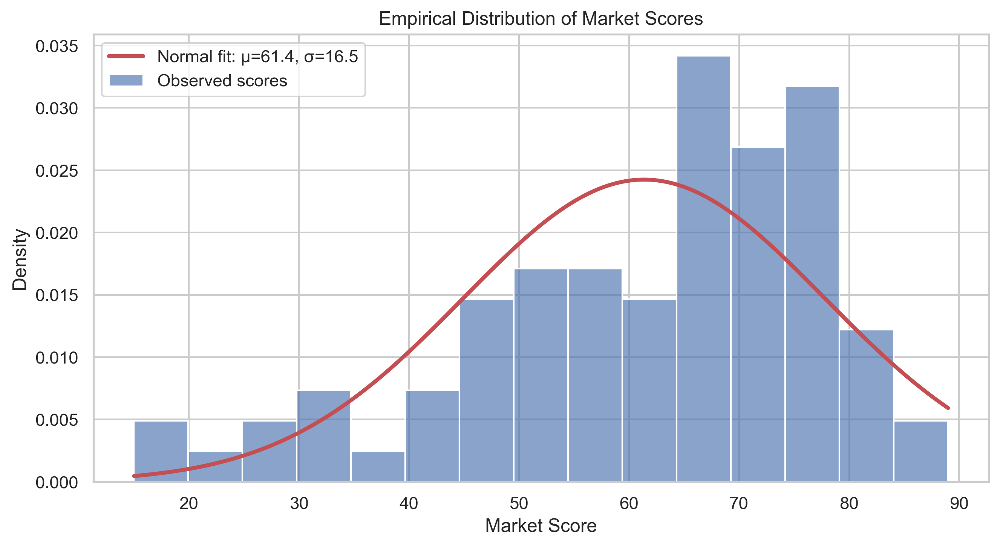
Market Score distribution with fitted normal curve
8. Full-period Analysis
The validation work asks three different questions: whether scores are stable through time, whether they move in sensible directions with independent market signals, and whether the historical scoring population differs materially from the 83-ZIP latest-period calibration sample.
Median annual absolute change
9 points
Measured from 4,933 consecutive annual ZIP pairs.
ZIPs with a ≥50-point jump
14.4%
Among 751 ZIPs eligible for jump analysis.
Maximum adjacent-record jump
100 points
Large movements merit driver and source-data review.
Historical Stability
This check tests whether period-to-period scores remain reasonably stable when the fixed latest-period models are applied across the complete history. It measures annual absolute changes, the share of ZIPs with large observation-to-observation jumps, maximum jumps, and the frequency of scores clipped to 0 or 100. Because observations are irregular, annual changes use each ZIP's final observation in consecutive calendar years; adjacent-record changes use the available observations and therefore may span unequal time intervals.
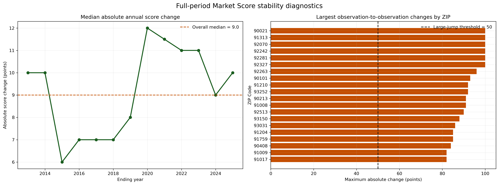
Champion refitted LassoCV: annual score movement and observation-level jump diagnostics across the full period.
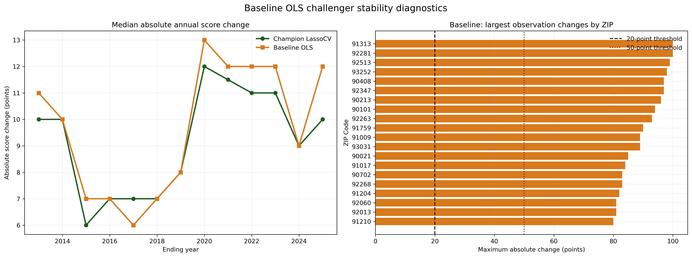
Baseline OLS challenger: the same stability diagnostics, allowing a like-for-like comparison with the champion.
Champion versus baseline stability
The three-variable baseline is used as a simpler challenger to test whether the champion's wider predictor set is the main cause of historical instability. Both fitted models are applied to the same full-period rows, constrained to integer scores from 0 to 100, and compared using identical annual-change, jump-frequency, maximum-jump, and boundary-score measures.
Measure
Champion refitted LassoCV
Baseline OLS
Median annual absolute score change
9.0
9.0
ZIPs with ≥20-point jump
83.1%
84.4%
ZIPs with ≥50-point jump
14.4%
14.9%
Maximum adjacent-record jump
100
100
Scores at 0 or 100
4.9%
4.6%
The three-variable baseline is not materially more stable than the champion. Contribution analysis also shows that the largest jumps can be traced to actual driver movements: ZIP 90021 falls from 100 to 0 with MEDIAN_LIST_PPSF_MOM as the largest contribution change; ZIP 91313 moves from 0 to 100 with MEDIAN_DOM dominant; and ZIP 92070 moves from 0 to 100 after MEDIAN_DOM falls from 2,826 to 102 days. These cases support model traceability but do not establish that the source observations are valid.
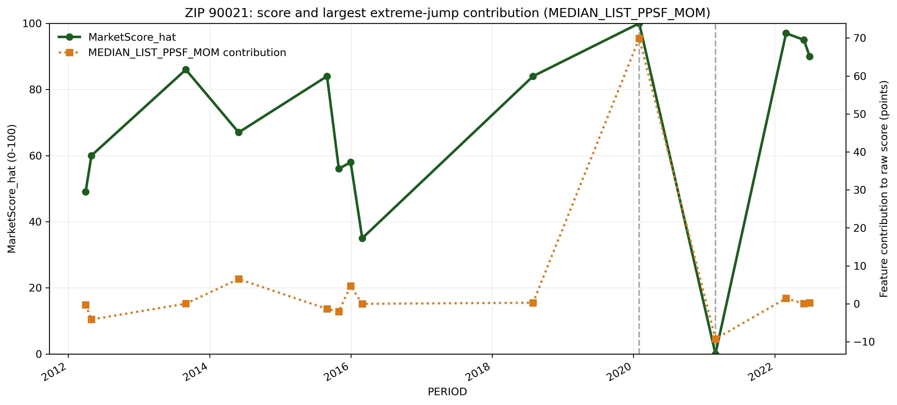
ZIP 90021: the 100-to-0 score jump and its most influential changing contribution.
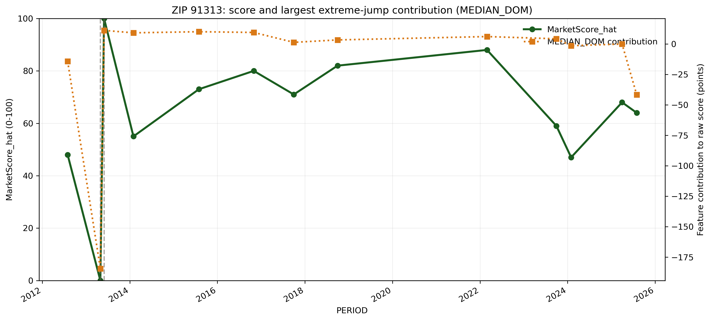
ZIP 91313: the 0-to-100 score jump and its most influential changing contribution.
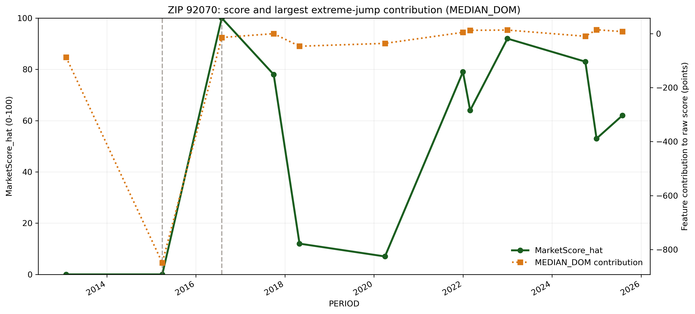
ZIP 92070: the 0-to-100 score jump associated with the extreme change in median days on market.
Independent-signal sanity checks
This check tests directional validity using market signals that were not selected by each model. For each model, the two eligible out-of-model variables with the strongest absolute Spearman relationship to the observed reference score are selected, then their Spearman relationship with latest-period predicted scores is compared with the business sign expectation. Passing results provide an independent plausibility check, although they do not establish predictive accuracy.
Model
Out-of-model signal
Expected direction
Spearman with predicted score
Result
Champion
PENDING_SALES
Positive
0.179
PASS
Champion
MEDIAN_DOM_YOY
Negative
−0.350
PASS
Baseline OLS
AVG_SALE_TO_LIST
Positive
0.668
PASS
Baseline OLS
HOMES_SOLD
Positive
0.123
PASS
Interactive distribution-shift review
Use the linked controls to compare the fixed latest-period 2025 calibration benchmark with full-period scoring records. The first chart combines empirical density histograms and kernel-density curves with dashed fitted-normal references, reference P01–P99 support, and population medians; the second uses ECDFs and makes no distributional assumption. The year control filters the full-period population only, so every year is assessed against the same 83-ZIP calibration benchmark. The optional ZIP control narrows both populations where a matching reference ZIP exists.
Observed shift: across all periods and ZIPs, the predicted-score median is 72 versus 63 in the reference sample, and 17.7% of historical scores exceed the reference 99th percentile. OFF_MARKET_IN_TWO_WEEKS has the largest measured separation (KS 0.348), while MEDIAN_DOM shifts from a reference median of 53 days to 41 days and develops a longer historical tail. These differences may combine real market cycles, geographic coverage, and data-quality effects; they are screening evidence, not proof of bad data.
Potential stability improvements to test: (1) transform highly concentrated MOM/YOY predictors with long tails and retrain the model, then re-evaluate calibration and stability; or (2) retain the fitted model and adjust materially shifted predictor distributions toward the latest-period calibration distribution before scoring. The second approach avoids model retraining but is a contingency method that still requires explicit testing for stability, calibration preservation, economic meaning, and unintended score distortion.
2. Modeling methodology
OLS benchmark
3 variables
Brute-force OLS over valid 2–4 variable specifications. The small search space favors explanation, reviewability, and direct business interpretation.
LassoCV
12 variables
Applies incompatibility rules first, then uses five-fold cross-validation to tune shrinkage and reduce complexity while preserving predictive information.
Champion: refitted LassoCV
9 variables
Removes two economically inconsistent variables and provides the best balance of fit, explanation, and business checks.
Why both methods?
Brute-force OLS deliberately limits original variables to 2–4. This makes the benchmark easy to explain and allows conventional diagnostics to remain readable. LassoCV starts from a broader compatible set and shrinks weak coefficients to zero, offering a lower-complexity alternative to an unrestricted regression. The refit is a business-sign contingency, not a new validation exercise.
How does Lasso handle missing predictors?
The Lasso pipeline includes imputation inside its preprocessing step. Numerical missing values are replaced with the training-sample median before standardization, while missing categorical values are replaced with the training-sample mode before one-hot encoding. During cross-validation, these replacement values are learned separately from each training fold and then applied to its held-out fold, which avoids using validation information during preprocessing. The fitted pipeline carries the same learned rules into latest-period and full-period scoring; unseen category levels are safely ignored. Although the 83-row latest-period calibration sample has no missing cells, this preprocessing allows the fitted model to score historical or application rows whose selected predictors are incomplete. Imputation supplies a usable input—it does not create new market information—so outputs based on imputed predictors should still be monitored.
Business: expected coefficient direction; coverage of price, demand/supply, and market-speed families; and exclusion of competing level/MOM/YOY versions of the same measure.
Validation: each corrected row is a unique ZIP, so shuffled five-fold validation produces out-of-fold Lasso predictions. These metrics are the best current estimate of generalization.
How did you constrain predictions to 0–100?
The OLS and refitted-Lasso models first generate unrestricted continuous predictions. Each prediction is then rounded to the nearest integer and passed through a deterministic score-range rule: values below 0 are floored at 0, values above 100 are capped at 100, and values already within the range are retained. The notebook counts predictions outside each boundary before clipping and prints a message whenever either rule is triggered. The champion’s constrained integer output is stored as Market_Score_hat_latest. This is a post-model reporting constraint; it does not alter model fitting or coefficients.
3. Model results
Model
Basis
Original variables
Parameters
R²
Adj. R²
RMSE
MAE
Spearman
Sign
Baseline OLS benchmark
In-sample
3
4
0.713
0.702
8.820
6.917
0.862
PASS
LassoCV
Out-of-fold
12
12
0.606
—
10.323
7.566
0.830
2 failures*
LassoCV
In-sample
12
12
0.788
0.752
7.572
5.883
0.887
FAIL
Champion: refitted LassoCV
In-sample
9
9
0.770
0.742
7.890
6.126
0.873
PASS
*Initial Lasso sign failures: MEDIAN_PPSF_MOM and INVENTORY_MOM. Refit CV statistics are unavailable because the contingency refit uses all modeling data once. Do not compare its in-sample error directly with Lasso out-of-fold error.
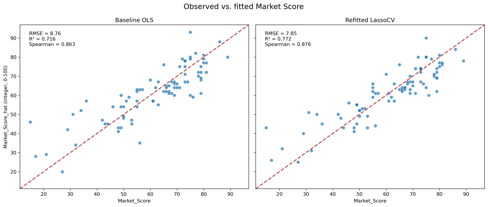
Observed versus fitted Market Score on the corrected 83-ZIP calibration sample
Baseline OLS benchmark
Variables: MEDIAN_DOM, SOLD_ABOVE_LIST, and OFF_MARKET_IN_TWO_WEEKS.
Coefficients and p-values
Coefficient
Estimate
p-value
Sign review
Intercept
63.907
1.63e−18
N/A
MEDIAN_DOM
−0.355
1.92e−9
PASS
SOLD_ABOVE_LIST
26.385
0.000582
PASS
OFF_MARKET_IN_TWO_WEEKS
36.869
0.00122
PASS
Selected-variable plots (3)
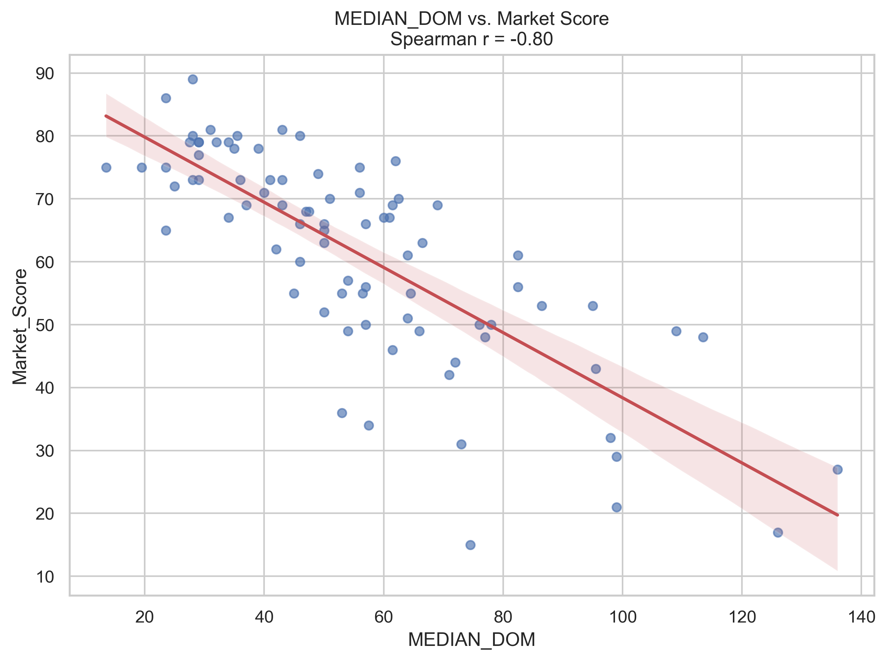
MEDIAN_DOM
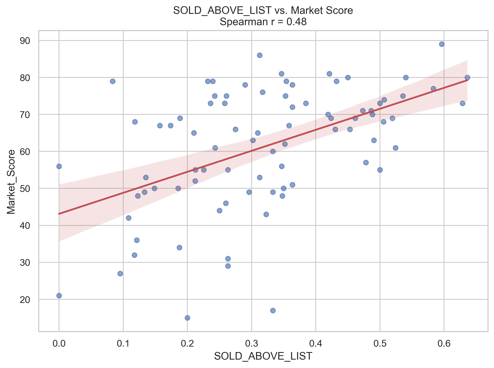
SOLD_ABOVE_LIST
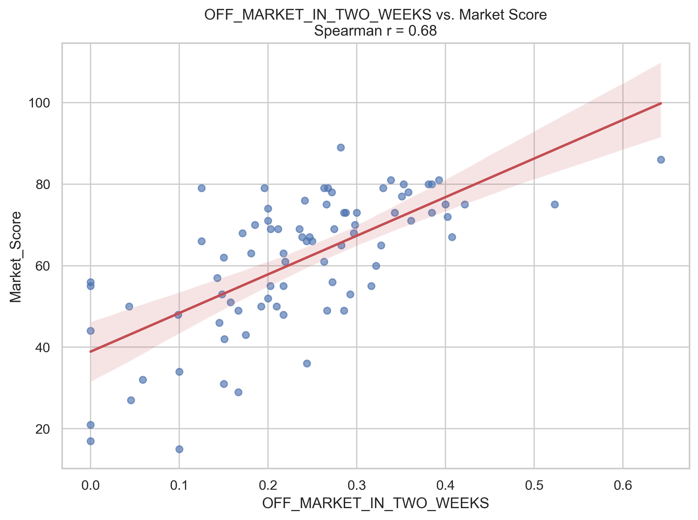
OFF_MARKET_IN_TWO_WEEKS
LassoCV
This table reproduces the current lasso_net_coefficients.csv. Coefficients are on standardized numerical inputs; p-values are exploratory post-selection OLS tests, with the selected county level evaluated by a joint F-test.
The refit removes the two initial sign failures. All constrained coefficients now pass the direction check; NEW_LISTINGS_YOY remains direction-unconstrained. The County variable was not manually excluded: after refitting, LassoCV shrank the encoded County_Los Angeles County coefficient to zero because it provided insufficient incremental predictive value beyond the retained market variables. Its initial effect was already weak, with a joint p-value of approximately 0.407.
Coefficients, p-values, and sign checks
Selected coefficient
Estimate
p-value
Sign
MEDIAN_SALE_PRICE_MOM
1.126
0.0338
PASS
MEDIAN_LIST_PRICE_MOM
0.315
0.367
PASS
MEDIAN_LIST_PPSF_MOM
1.908
0.0475
PASS
HOMES_SOLD
0.877
0.184
PASS
NEW_LISTINGS_YOY
−1.384
0.0313
N/A
MEDIAN_DOM
−7.590
8.43e−8
PASS
AVG_SALE_TO_LIST
0.845
0.556
PASS
SOLD_ABOVE_LIST
2.751
0.0132
PASS
OFF_MARKET_IN_TWO_WEEKS
4.708
8.74e−5
PASS
Feature importance and top-three business drivers
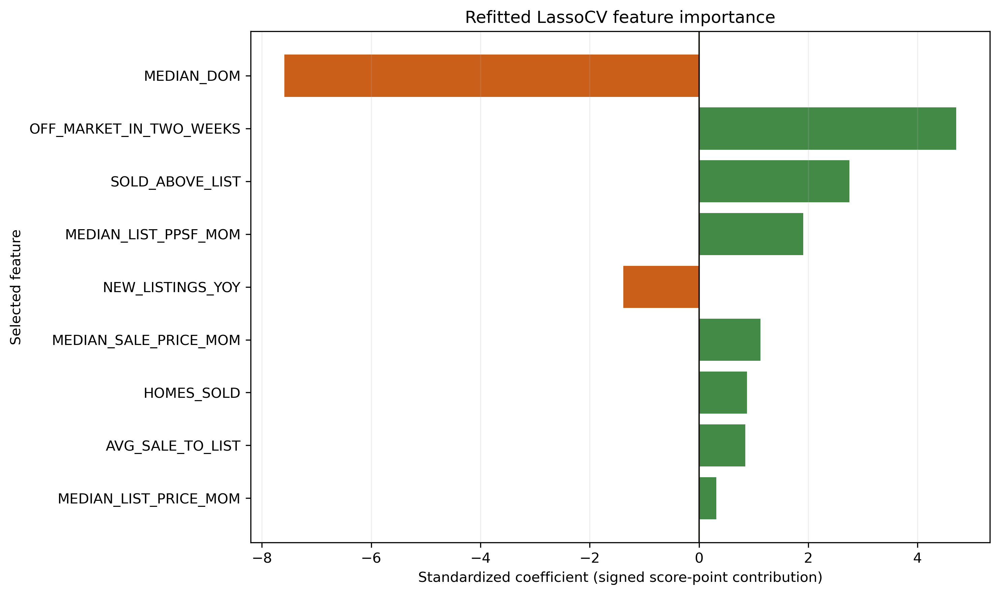
Refitted LassoCV feature importance. Bar length is the absolute standardized-coefficient magnitude; direction shows whether the feature raises or lowers the predicted score.
MEDIAN_DOM (−7.590): the largest driver by absolute coefficient. Longer marketing time indicates slower buyer absorption and reduces the Market Score; faster-moving inventory therefore supports a stronger score.
OFF_MARKET_IN_TWO_WEEKS (+4.708): a larger share of listings leaving the market quickly signals strong near-term demand and competitive buyer activity, increasing the Market Score.
SOLD_ABOVE_LIST (+2.751): a higher share of homes selling above asking price indicates bidding pressure and seller leverage, increasing the Market Score.
These rankings use absolute coefficients after numerical standardization, making magnitudes comparable across predictors. They describe conditional model influence—not causality—and correlated features can divide or reallocate importance.
4. Latest-period calibration and reference validation
How was the model fitted to the reference scores?
For every ZIP with a 2025 observation, the calibration date is its maximum PERIOD_END within 2025. The reference table is joined by ZIP, leaving 83 unique labeled latest-period rows with no missing model fields. Baseline OLS and LassoCV are fitted only on these aligned rows; earlier observations are not used as additional training labels. Lasso preprocessing median-imputes numerical predictors if needed, one-hot encodes nominal categories, and standardizes numerical inputs before penalization.
The initial Lasso applies feature-incompatibility rules and selects its penalty by five-fold cross-validation. Two selected variables fail their expected economic signs—MEDIAN_PPSF_MOM and INVENTORY_MOM—so the contingency refit removes them and reruns LassoCV on the 83 calibration rows. The resulting nine-variable refitted Lasso is the champion.
How does the model convert market metrics into a score?
The model standardizes each numerical input, multiplies it by its fitted coefficient, and adds the contributions with the intercept. Faster and more competitive conditions raise the score: more homes sold above list and more homes going off market within two weeks contribute positively, while longer median days on market contributes negatively. The continuous result is rounded to an integer and clipped to the required 0–100 range.
Simple reference-alignment validation
Calibration ZIPs
83
One latest-2025 row per reference ZIP.
RMSE / MAE
7.89 / 6.13
Champion in-sample error against the reference scores.
R² / adjusted R²
0.770 / 0.742
Share of calibration-score variation explained.
Spearman
0.873
Strong agreement in ZIP score ranking.
Observed reference scores versus fitted scores on the 83 aligned latest-period ZIPs. The diagonal represents perfect agreement.
These are calibration-sample statistics. The initial Lasso has an outer-fold validation result, but the sign-constrained contingency refit has not yet been reevaluated through a fresh outer cross-validation loop.
5. Validation for all latest-period SoCal ZIPs
The champion pipeline is applied without retraining to all 524 ZIPs with a latest 2025 record. Predictions are rounded and clipped to 0–100; six raw predictions fall below 0 and six exceed 100, so the range rule is triggered. The required output is scores_latest_all_zips.csv, and an enriched copy retains all nine selected explanatory variables for review.
Do scores align with key market signals?
The three lowest-p-value numerical drivers show the expected monotonic directions across the 524 latest-period ZIPs. Higher scores coincide with fewer days on market, a larger share going off market within two weeks, and a larger share sold above list.
Signal
Expected direction
Spearman with score
Rows
Check
MEDIAN_DOM
Negative
−0.853
524
PASS
OFF_MARKET_IN_TWO_WEEKS
Positive
0.793
518
PASS
SOLD_ABOVE_LIST
Positive
0.661
524
PASS
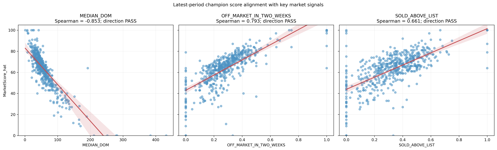
Direct latest-period signal check. All three relationships have the expected economic direction.
Top and bottom ZIP review
The two views below compare the champion’s ten highest- and ten lowest-scoring ZIPs with its three most important business drivers. ZIP codes are on the x-axis and connected observations emphasize differences across the ranked groups. The left y-axis shows the constrained predicted score and MEDIAN_DOM in days; the percentage-formatted right y-axis shows OFF_MARKET_IN_TWO_WEEKS and SOLD_ABOVE_LIST. Green diamonds represent predicted scores, while dotted orange lines represent the explanatory variables.
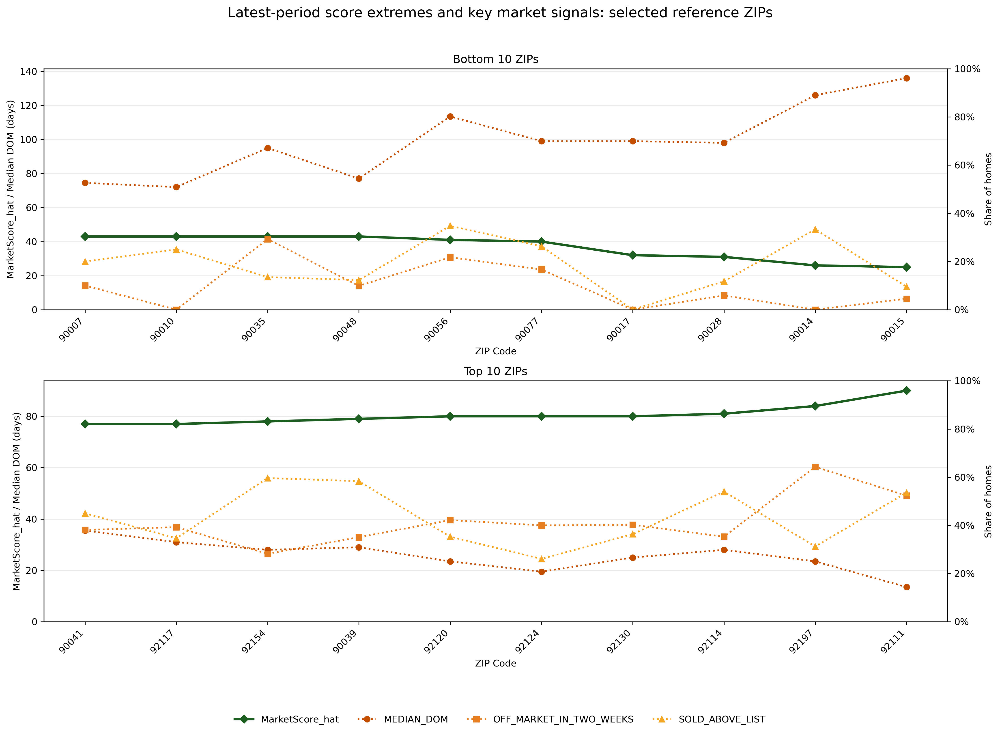
Selected reference ZIPs: predicted score extremes and key market signals.
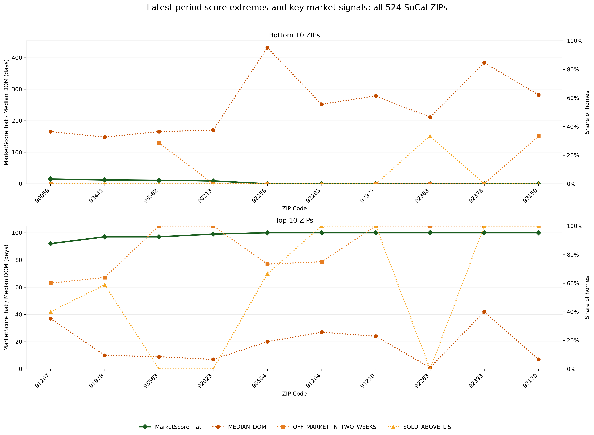
All 524 latest-period ZIPs: predicted score extremes and key market signals.
The extremes generally move in the intended direction: high-score ZIPs tend to have faster sales and stronger competitive signals, while low-score ZIPs tend to be weaker. Individual drivers can diverge because the final score combines all nine champion variables. Several all-ZIP predictions reach the 0 or 100 boundary, so ordering within a tied capped or floored group is not economically meaningful and should be reviewed as a calibration limitation.
Interpretation: this is a model-behavior sanity check, not independent accuracy validation, because these signals are model inputs. A stronger future test would repeat the checks on an untouched sample or compare score groups with outcomes not used in model fitting.
Cross-sectional averages by latest month
The period-average views provide an additional plausibility check: score movements generally track faster market speed and stronger competitive signals. However, each ZIP contributes only its own latest 2025 record, so the ZIP population changes by month. These figures combine market movement with sample-composition effects and are not a fixed-panel time series.
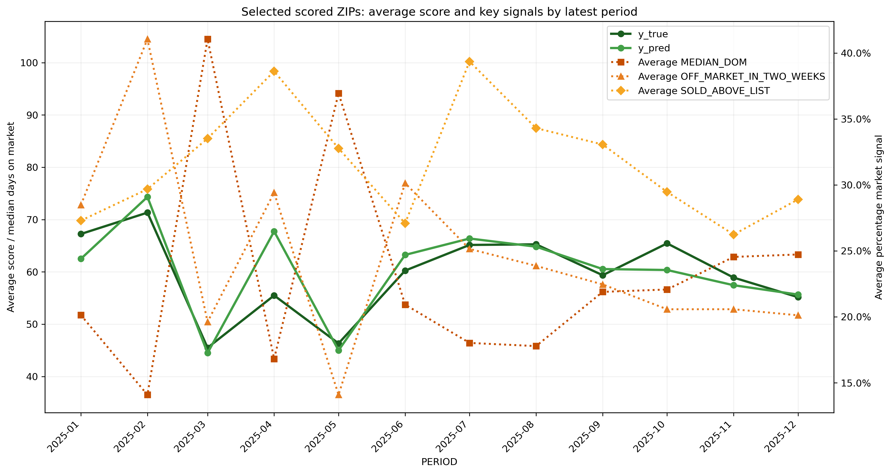
Selected reference ZIPs: average observed score, predicted score, and key signals by latest month.
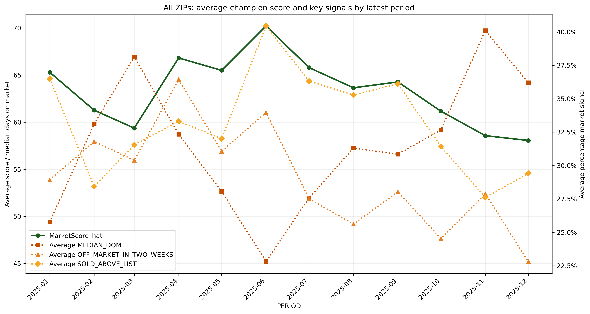
All 524 ZIPs: average champion score and key signals by latest month.
6. Optional extension across time
The fitted latest-period models are applied without retraining to 1,505 historical rows belonging to the 83 scored ZIPs that also have 2025 data. Each row uses its own period-specific market features, producing a period-sensitive score.
Historical diagnostic statistics
Model
Rows
RMSE
MAE
R²
Spearman
Baseline OLS
1,505
17.868419
13.883721
−0.198101
0.556168
Refitted LassoCV
1,505
18.212223
14.144850
−0.244650
0.552837
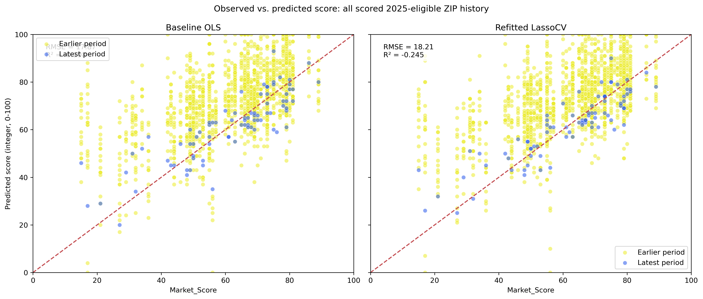
Historical diagnostic for the scored ZIPs. Green points identify the actual latest-period rows used for valid reference comparison.
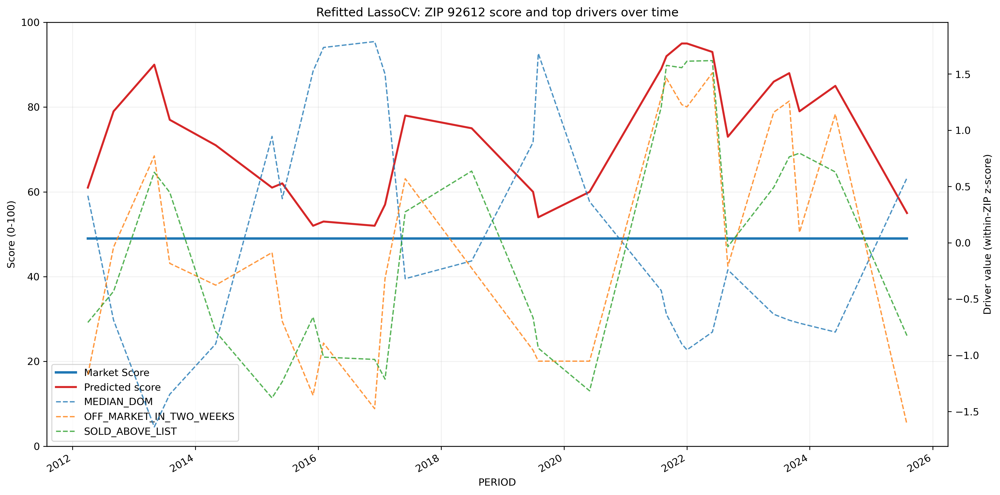
ZIP 92612: predicted score and standardized key drivers across available periods.
Why is historical R² negative? True historical Market Scores are unavailable. The latest-2025 ZIP score is repeated across earlier rows only as a benchmark, creating a time-invariant target while the model responds to period-specific conditions. Baseline OLS has historical R² −0.198 and refitted LassoCV −0.245 under this artificial comparison. These values do not measure historical accuracy; historical output should instead be reviewed for gradual movement, stability, and sensible response to market signals.
ZIP 92612, with 27 observations, is used for the detailed score-and-driver trend example. Its period-specific predicted Market Score broadly follows changes in the three most significant explanatory variables: MEDIAN_DOM, OFF_MARKET_IN_TWO_WEEKS, and SOLD_ABOVE_LIST. However, the historical predictions are generally above the ZIP’s mapped latest-period reference score. This difference may reflect changing market conditions, the time-invariant reference benchmark, or model calibration and should receive further business analysis before the historical scores are used operationally.
Generated scoring outputs
File
Rows
Columns
scores_latest_select_zips_eval.csv
83
Zip Code, City, County, PERIOD, y_true, y_pred
scores_latest_all_zips.csv
524
Zip Code, City, County, PERIOD, MarketScore_hat
7. Full-period Scoring
The fixed champion refitted-LassoCV pipeline is applied without retraining to every existing SoCal ZIP-period record. The same fitted median imputation, standardization, and model coefficients used for latest-period scoring are preserved. Predictions are rounded and clipped to 0–100; missing time points are not created.
Rows scored
12,445
One row per existing ZIP and month.
ZIP codes
764
All ZIPs represented in the cleaned history.
Periods
166
March 2012 through December 2025.
Range adjustments
571
149 predictions floored at 0; 422 capped at 100.
Interactive ZIP score and explanatory-variable history
Select a ZIP and any champion-model explanatory variables. MarketScore_hat remains on the left 0–100 axis. Selected explanatory variables are standardized within the chosen ZIP and shown as dotted lines on the right axis, allowing variables with different units to be compared without changing their underlying values.
How to interpret the chart: co-movement shows whether the period-sensitive score responds plausibly to its drivers; it does not prove historical accuracy because true historical reference scores are unavailable. The driver axis reports within-ZIP z-scores, while the tooltip retains original variable values. Lines connect existing observations across irregular gaps; no missing months are imputed.
The complete output is saved as scores_all_periods.csv with columns Zip Code, City, County, PERIOD, and MarketScore_hat.
9. Full-period Scoring (Adjusted)
This contingency tests whether limiting historical predictor extrapolation and aligning the score distribution with the latest-period calibration regime can improve stability. It does not retrain the champion model.
Stage 1 — Reference-based predictor trimming
For each of the nine numerical champion predictors, Tukey limits are estimated from the 83 latest-period reference rows: Q1 − 1.5×IQR and Q3 + 1.5×IQR. Historical values outside those limits are floored or capped, missing values remain available to the fitted pipeline's imputer, and the unchanged refitted-LassoCV pipeline scores all 12,445 rows. The most frequently adjusted variable is OFF_MARKET_IN_TWO_WEEKS (2,364 rows; 19.0%), followed by MEDIAN_LIST_PPSF_MOM (10.8%) and MEDIAN_SALE_PRICE_MOM (10.5%).
Median annual change
9 → 8
Absolute score points.
ZIPs with ≥50-point jump
14.4% → 3.9%
Original versus IQR-trimmed predictions.
Maximum observed jump
100 → 72
Across consecutive available observations.
Boundary scores
4.9% → 0.1%
Share scored at 0 or 100.
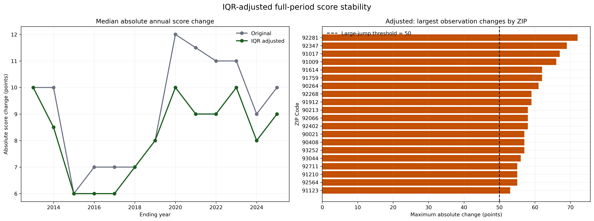
IQR trimming reduces extreme score movement, although consecutive observations may span irregular and sometimes long time gaps.
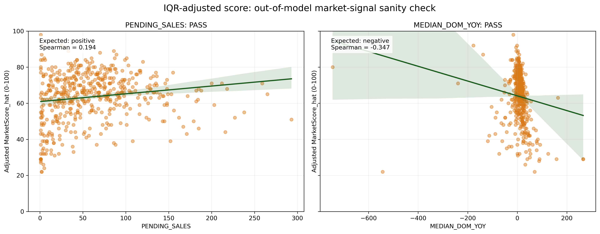
Directional sanity checks remain positive for PENDING_SALES (ρ=0.194) and negative for MEDIAN_DOM_YOY (ρ=−0.347); both pass.
Measurement boundary: these stability and sanity results are calculated after predictor trimming but before the fitted-Normal score overlay described below. Stability should be recalculated on the final mapped scores before operational use.
Stage 2 — Fitted-Normal distribution overlay
Consider:
A: latest-period data
B: full-period data
Transform B → A
Rather than directly mapping B to the empirical distribution of A, assume that the latest-period data follows a Normal distribution:
YA ∼ 𝒩(μA,σA2),
where μA and σA are estimated from the latest-period sample A.
For the full-period data:
YB ∼ FB.
First, map each observation in B to its percentile under the distribution of B:
UB = FB(YB).
Then map this percentile to the fitted Normal distribution of A:
Y′B = F−1A,Normal(UB) = μA + σA Φ−1(UB).
Therefore,
Y′B = μA + σA Φ−1(FB(YB))
where Φ−1 is the inverse CDF (quantile function) of the standard Normal distribution.
The transformed variable Y′B approximately follows:
Y′B ∼ 𝒩(μA,σA2).
The IQR-trimmed full-period score is converted to its empirical midpoint percentile, U=(rank−0.5)/n, then mapped through a Normal distribution fitted to the latest-period reference scores: Y′=μA+σAΦ⁻¹(U). The fitted reference parameters are μ=61.36 and σ=13.50. Mapped values are rounded to integers and constrained to 0–100. This preserves rank ordering while aligning the full-period marginal score distribution with a smooth latest-period target.
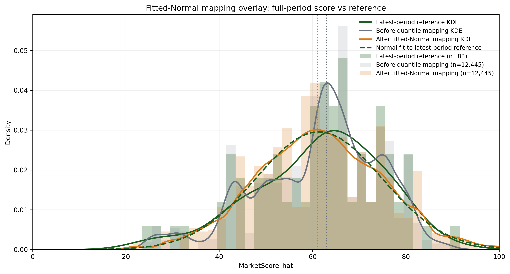
Empirical score distributions before and after mapping, compared with the latest-period reference sample and its fitted Normal density.
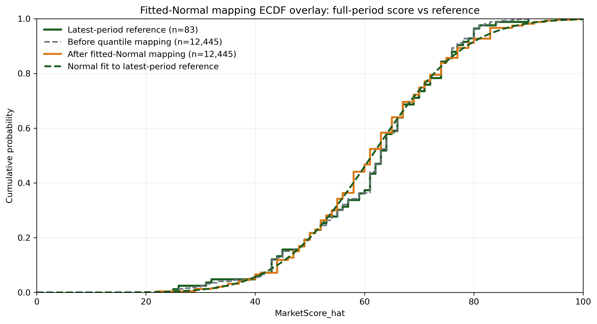
ECDF comparison showing how the final mapped scores align with the fitted latest-period target.
Interactive adjusted distribution-shift review
Select the final adjusted score or any champion explanatory variable, then filter the full-period population by year or ZIP. The fixed 83-ZIP latest-period reference remains unchanged. Predictor distributions are the observed full-period inputs; only MarketScore_hat switches to the final IQR-trimmed and fitted-Normal-mapped output.
Interpretation and contingencies
The overlay adjusts the marginal score distribution; it does not prove that historical reference scores would have followed the latest-period distribution.
Forcing history toward the latest-period regime may suppress genuine housing cycles, so the adjusted output should remain a sensitivity or contingency result until back-testing is available.
An alternative is to adjust selected explanatory variables where the change is economically defensible. Independent mapping can distort relationships among predictors; multivariate or copula-based methods could preserve the latest-period dependence structure.
Any production decision should compare final-score stability, ZIP ranking, calibration preservation, driver realism, and sensitivity to the chosen reference window.
The final mapped output is saved as scores_all_periods_adjusted.csv with columns Zip Code, City, County, PERIOD, and MarketScore_hat.
Interpretation and current decision
The selected linear champion is the refitted LassoCV. Among models that pass the business-direction checks, it offers the best overall statistical performance, manageable complexity, and clear feature-family coverage. It retains nine original variables, materially improves in-sample fit over the OLS benchmark, and passes all defined business sign checks.
Full-period treatments: the unadjusted champion remains the transparent primary scoring method. Two contingency treatments were also developed for historical application: first, cap or floor the nine numerical model predictors using 1.5×IQR limits estimated from the latest-period reference sample and score them with the unchanged champion pipeline; second, map the resulting score percentiles to a Normal distribution fitted to the latest-period scores. Predictor trimming materially improves the pre-overlay stability diagnostics, while the fitted-Normal overlay aligns the final marginal score distribution with the latest-period regime. Because the overlay may suppress genuine market cycles and final post-overlay stability has not yet been recalculated, scores_all_periods_adjusted.csv should be treated as a sensitivity or contingency output rather than replacing the unadjusted score.
The champion refit has not yet received a new outer five-fold CV evaluation; that validation should precede production use.
All Lasso p-values are exploratory post-selection OLS statistics. The corrected sample contains 83 unique ZIPs.